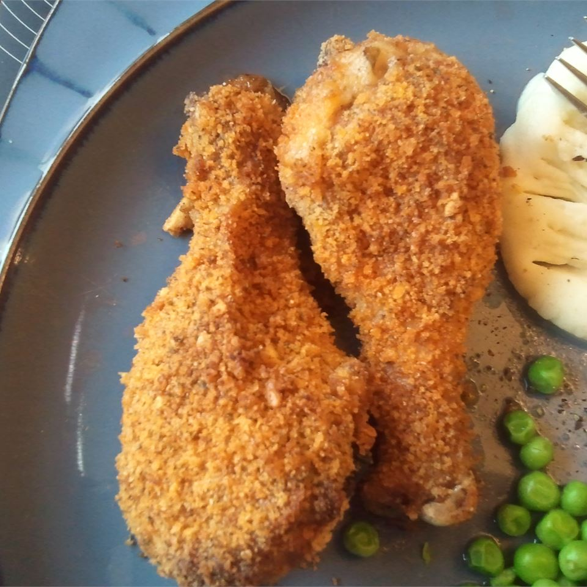

Shake and Bake

Quick and juicy
A delicious way to improve upon the basics of making baked chicken.
This is a quick and tasty way of making chicken that is both affordable and easy. Perfect for students and NASCAR drivers alike.
Required Ingredients
1-2 chicken breats
shake and bake mix
table salt
Ground pepper
Recipe Steps
- Pre-heat oven to 400 degrees F
- Place chicken breats in plastic bag and tenderize meat (Hammer Time)
- Place Shake and Bake mix in bag along with additonal seasonings
- Now shake it like a new born
- Place on baking sheet and let cook for 20-25 minutes